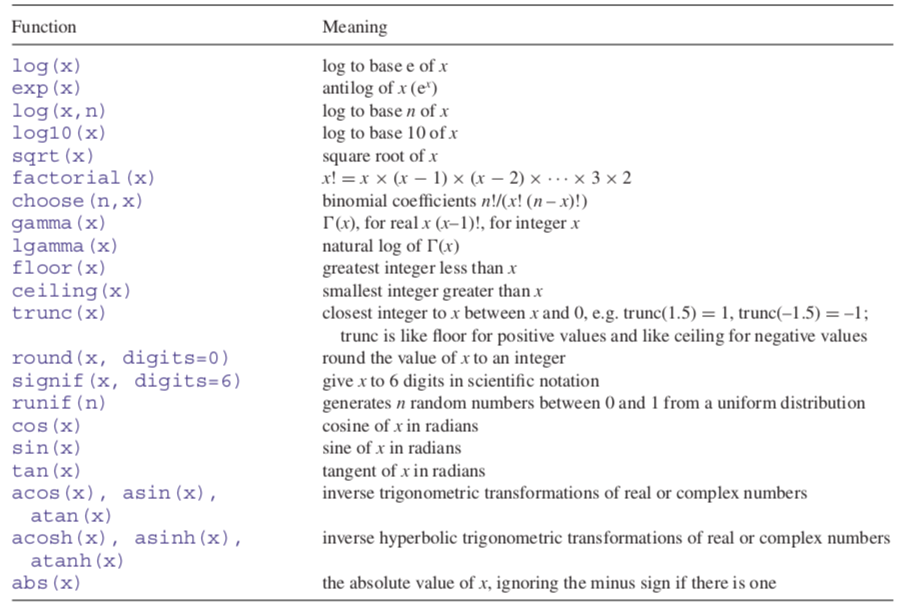

Bölüm5 Temel Nesneler
Bu bölümde kodlama için ihtiyaç duyacağınız temel yapılar açıklanacak ve uygulamalar ile desteklenecektir. Farklı uygulamalar ders esnasında eş zamanlı yapılacağından lütfen online dersleri takip ediniz.
5.1 Aritmetik (Arithmetic)
R, en basit haliyle hesap makinesi olarak kullanılabilir. Toplama +, çıkarma -, çarpma *, bölme / operatörleri ile gerçekleştirilir.
## [1] 9Birden fazla matematiksel işlem aynı satırda gerçekleştirilebilir.
## [1] 7## [1] 24## [1] 8İşlemler parantez yardımıyla önceliğine göre yazılabilir, yazılmadığı taktirde matematiksel işlem önceliği geçerlidir.
## [1] 17İşlem devam edecek biçimde tanımlanırsa console + simgesi ile devam edecek ve işlem tamamlanana kadar yeni işleme geçmenize engel olacaktır. İşlemi tamamlamalı veya yeni işleme geçmek için esc tuşunu kullanmalısınız.
## [1] 100Yapılan işlemler sonucu elde edilen çok büyük veya çok küçük sonuçlar için output exponent olarak verilir.
## [1] 3.6e+071.3e2 (130 anlamına gelir. e2: ondalık noktasını iki basamak sağa taşı)
1.4e-1 (0.14 anlamına gelir. e-1: ondalık noktasını bir basamak sola taşı)
Uygulamada elde edilen sonucun integer (tamsayı) olması gerekebilir. Bu noktada elde edilen output üste, alta veya 0.5 üzeri ya da altı olma durumuna göre farklı komutlar yardımı ile yuvarlanabilir.
- floor: alta yuvarla
## [1] 5## [1] 5- ceilign: üste yuvarla
## [1] 4## [1] 4- round: 0.5 üzeri ise üste, 0.5 altı ise alta yuvarla
## [1] 6## [1] 5Negatif sayılarda komutların nasıl işlediğini inceleyebilirsiniz.
round komutu ile virgülden sonra kaç basamak olması gerektiğini belirterek yuvarlama işlemi yapabilirsiniz.
## [1] 1.25Kullanılabilecek matematiksel fonksiyonlara örnek olarak (Crawley 2012)

5.2 Nesneleri Tanımlama (Assigning Objects)
Temel işlevlerden bir diğeri kullanılacak değişkenlerin tanımlanmasıdır. Değişken için seçilecek isim mümkün olan en kısa haliyle tanımlanarak kavram kargaşası önlenmelidir.
R, büyük ve küçük harfe duyarlıdır, dolayısıyla tanımlanan \(B\) ve \(b\) iki farklı değişkeni temsil eder.
Değişken ismi iki veya daha fazla kelimeden oluşacaksa kelimeler arasında boşluk yerine nokta kullanılmalıdır. (
neura link)Değişken ismi sayı veya sembol ile başlayamaz. (
1a,&b)
Değişken tanımlama işlemi <- operatörü ile gerçekleştirilir. Tanımlanan değişken adı ile çağrılmazsa veya print komutu kullanılmazsa çıktı yazdırılmaz.
## [1] 3Sayısal olmayan değer tanımlamaları tırnak içerisinde yapılmalıdır.
Tanımlanan değişken veya fonksiyon ile ilgili notlar # ile tanımlanır.
Çıktıda basılan [.] kaçıncı gözlemden devam edildiğini gösterir. Örneğin 30 gözleminin [26] ifadesinin yardımı ile 26. gözlem olduğunu kolaylıkla söyleyebiliriz. [.] ifadeleri asıl seride yer almaz, yalnızca yol gösterici olarak çıktıda gözlenir.
## [1] 5 6 7 8 9 10 11 12 13 14 15 16 17 18 19 20 21 22 23 24 25 26 27 28 29
## [26] 30 31 32 33 34 35 36 37 38 39 40 41 42 43 44 45 46 47 48 49 505.3 Vektörler (Vectors)
Vektör oluşturmak için c() operatör kullanılmaktadır. Vektörler
- numeric
- character
- logical
- integer
- complex
yapıları içerebilir. Vektörler yalnızca aynı yapıda gözlemler içerebilir.
x <- c(0.5, 0.6) # numeric
x <- c(TRUE, FALSE) # logical
x <- c(T, F) # logical
x <- c("a", "b", "c") # character
x <- 9:29 # integer
x <- c(1+0i, 2+4i) # complexT ve F, TRUE ve FALSE’a karşılık kullanılan kısaltma yapılardır.
## [1] TRUE FALSEAynı zamanda vector komutu ile de vektör oluşturabilirsiniz. Vektörü tanımlarken belirlenen içerik yapısına göre oluşturulur.
## [1] 0 0 0 0 0 0 0Karakter elemanları içerecek bir vektör oluşturmak istendiğinde;
## [1] 0+0i 0+0i 0+0i 0+0i 0+0i 0+0i 0+0iAynı değişken adı birden fazla tanımlamada kullanılırsa yapılan son tanımlama geçerli olacaktır. Kod yazarken kullandığınız değişken isimlerine ve doğru yazıma dikkat ediniz.
Vektör aynı yapıda gözlemlerden oluşmuyorsa?
Bu durumda tüm gözlemler tek bir yapı olarak algılanır. Herhangi bir değişkenin hangi yapıda gözlem içerdiği class() komutu ile sorgulanabilir.
## [1] "character"## [1] "numeric"## [1] "character"Vektör farklı yapıda gözlemler için verimli kullanılamıyor olabilir ancak bu işlemi gerçekleştirebilen
listkomutu mevcuttur. İlerleyen başlıklarda bu komut detaylandırılacaktır.
Kodlama yaparken sıklıkla kullanılan bir işlem türü de vektör yapısının değiştirilmesidir. Vektör içeriğinin aynı yapıda olması kuralına sadık kalarak tüm vektör içeriği farklı bir yapıya aktarılabilir. Burada as.numeric, as.logical gibi komutlardan faydalanılır.
## [1] "integer"x vektörünün integer yapıda olduğunu gördükten sonra as.character komutu ile yeni x vektörünü numeric olarak tanımlayabiliriz.
## [1] "0" "1" "2" "3" "4" "5" "6"## [1] "character"Bazı durumlarda R dönüşüm için çözüm üretemez ve NA çıktı verir.
## Warning: NAs introduced by coercion## [1] NA NA NA5.4 Matrisler (Matrices)
Matrisler, boyut niteliğine sahip vektörlerdir. Matris yapısında satır (row) ve sütun (column) tanımlanması gündeme gelmektedir. m içeriği boş bir matris olmak üzere;
## [,1] [,2] [,3]
## [1,] NA NA NA
## [2,] NA NA NAMatris boyutu dim() komutu ile sorgulanır.
## [1] 2 3Matris yapısında gözlemler sütun şeklinde sıralanır.
## [,1] [,2] [,3]
## [1,] 1 3 5
## [2,] 2 4 6Vektörler parçalanarak da matris yapısı oluşturabilirler.
## [1] 1 2 3 4 5 6 7 8 9 10## [,1] [,2] [,3] [,4] [,5]
## [1,] 1 3 5 7 9
## [2,] 2 4 6 8 10Matrisler, satır veya sütunların birleştirilmesi yoluyla da oluşturulabilir. Satıların bir araya getirilmesi için rbind komutu kullanılırken, sütunların bir araya getirilmesi için cbind komutu kullanılmaktadır.
## x y
## [1,] 1 10
## [2,] 2 11
## [3,] 3 12## [,1] [,2] [,3]
## x 1 2 3
## y 10 11 125.5 Listeler ve Data Frameler (Lists and Data Frames)
5.6 Nümerik Olmayan Değerler (Non-Numeric Values)
5.6.1 Mantık İşlemleri
5.6.2 Karakterler
5.6.3 Faktörler (Factors)
5.7 Eksik Gözlemler (Missing Values)
Referans
Crawley, Michael J. 2012. The R Book. John Wiley & Sons. https://www.cs.upc.edu/~robert/teaching/estadistica/TheRBook.pdf.